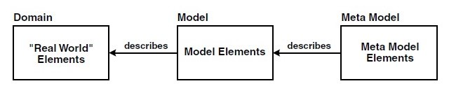

Alma Mater Studiorum - Università di Bologna
Computer Science and Engineering Department (DISI)
Elements of
Metamodeling
A. Croatti
Laboratory of Software Systems
A.Y. 2020/2021
What Is Metamodeling?
-
Metamodels are models that make statements about modeling
- A metamodel describes the possible structure of models (the constructs of a modeling language and their relationships, as well as constraints and modeling rules) but not the concrete syntax of the language
-
A metamodel defines the abstract syntax and the static semantics of a modeling language
- E.g., each formal language, such as Java or UML, possesses a metamodel
-
Metamodels and models have a class-instance relationship
- Each model is an instance of a metamodel
-
To define a metamodel, a metamodeling language is required that in turn is described by a meta metamodel
Relationship between
domain, model and metamodel
OMG Metalevels

-
The meta relationship is always to be seen relative to a model.
- An absolute definition of the term metamodel does not make sense in theory, but in practice it is quite useful
-
For this reason, the OMG (Object Management Group) defines four metalevels
- M0 - the istances of classes/entities in a particular domain/software
- M1 - the model, class/entities definitions
- M2 - the metamodel, definitions of constructs used in the model
- M3 - the meta metamodel, MOF (Meta Object Facilities) classes/entities
The MOF Role
-
MOF serves to define modeling languages at M2
- such as for example UML
-
The idea behind this is that UML will not remain the only modeling language, but that additional domain-specific and possibly standardized modeling languages will be defined that are based on the MOF
-
The MOF is also able to define non-OO modeling languages
-
There is no metalevel in the OMG model above the MOF
- basically, the MOF defines itself
-
https://www.omg.org/ocup-2/documents/Meta-ModelingAndtheMOF.pdf
MOF and UML
-
UML is an instance - an application - of the MOF
- … but UML existed before the MOF!
-
UML was originally not formally defined
- it was defined purely verbally
- The MOF was defined later to specify UML formally based on the MOF
-
The notation for MOF models is the concrete syntax of UML
- MOF contains a number of model elements that are also present in UML
Extending UML
-
In the context of software development, often one will not start by defining a completely new M2 language based on the MOF
- It is more likely that one will start with the UML metamodel and extend it as needed
-
In UML 2.0: extension using stereotypes and/or profiles
- Profiles support adaptation or extension of UML to fit professional or technical domains
- UML is not a language, but a language family: in this case, UML profiles are elements – concrete languages – in this family